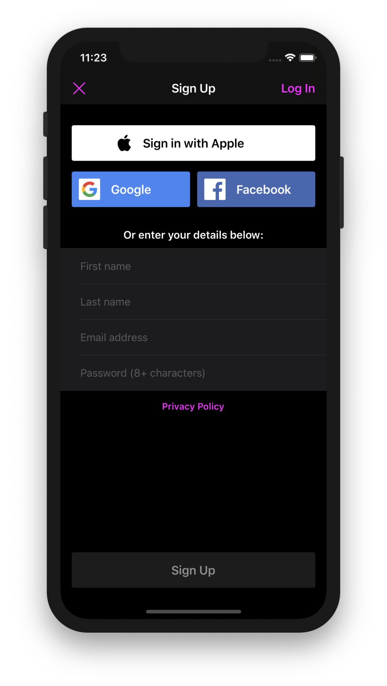

Over the weekend I launched Mezzanine, a new theater diary app for iOS. Mezzanine is the first app I have launched since the introduction of Sign in with Apple, so I was interested to see how popular it would prove with users. The short answer: for Mezzanine users, Sign in with Apple is much more popular than using any other social account, and about as popular as using an email address.
Mezzanine lets users sign using their Apple, Facebook, or Google accounts, or by creating an account with their email address.
Each option is not given equal billing in Mezzanine's accounts screen, with the Apple option listed first and with the largest button. As such, this is not a useful test for comparing each service's popularity on a level playing field. But it does demonstrate that users are more than willing to use their Apple accounts when encouraged to do so.
Of the 232 users that joined Mezzanine in the first couple of days, these were the preferred sign in methods:
| Apple | 98 (42%) |
| 95 (41%) | |
| 20 (9%) | |
| 19 (8%) |
For most of Mezzanine's beta, Sign in with Apple was not offered. Of the 271 accounts created in that period, these were the preferred sign in methods:
| 137 (51%) | |
| 79 (29%) | |
| 55 (20%) |
It is clear from this comparison that Sign in with Apple is mostly appealing to people who would otherwise use their Facebook or Google accounts. In my opinion, this is good news not just for Apple but also for any privacy-conscious developers and users. Were I building Mezzanine from scratch today, I don't think I would offer either Facebook or Google as sign-in options.
Mezzanine is available now on the App Store.